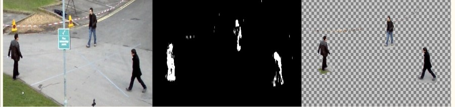

MOving object detection
- Mohamed Kamal: muhammedkamal98@gmail.com
- Moahamed Elmaghraby: mmaghraby134@gmail.com
Problem Statement
Our project focuses on moving object detection which deals with identifying and locating objects of certain classes in a stream of videos. The best accuracy achieved so far is on coco dataset which is 37.4 by CenterNet on 52 fps.
Dataset
We would use MOT video of labeled bounding boxes as a data sets and IOU and precession accuracy
it is a CSV text-file containing one object instance per line. Each line must contain 7 values:
frame, id, bb_left, bb_top, bb_width, bb_height, conf
The conf value contains the detection confidence in the det.txt files.
For the ground truth, it acts as a flag whether the entry is to be considered.
A value of 0 means that this particular instance is ignored in the evaluation,
while any other value can be used to mark it as active. For submitted results, all lines in the .txt file are considered.
1, -1, 794.27, 247.59, 71.245, 174.88, 4.56
1, -1, 1648.1, 119.61, 66.504, 163.24, 0.32
1, -1, 875.49, 399.98, 95.303, 233.93, -1.34
...
Input/Output Examples
input Example

output Example
State of the art
Related work
- CenterNet where the network uses Hourglass blocks and detects the center point of the object. 37.4% mAP
- CornerNet with its variation (original, squeeze) 36.5% mAP
- SSD detectors 26.8% mAP
- Yolo V2 28% mAP
- RetinaNet 31% mAP
Yolo Result
Yolo-tiny Result
ssd_mobile Result
fast_rnn_resnet Result
Orignial Model from Literature
We selected to use Tiny Yolo as
- Yolo considered the first model to achieve good performance near real-time.
- Use the tiny version for speed of training and inference.
- And has a simple architecture
Yolo-tiny VS Yolo
- Number of conv layers in yolo is more than it in yolo-tiny.
- There is a variety in filter dimensions in yolo while in yolo-tiny they use only 3*3 filters.
- Each block in yolo consist of many conv layers and one max pooling while in yolo-tiny each block consist of one con layer and one block.
- Original model of both yolo and tiny yolo has skip connections while ours doesn’t.
Loss Function
- first term: top left point x and y loss
- second term: width and height loss
- third/forth term: output class type loss
- fifth term: output confidence loss
Proposed Updates
-
What is Feature fusion?
Combining two or more different feature representation for the data two come up with combined feature that more representative than both of original features.
 -
Is that enough?
No, because the foreground mask is not always that accurate due to:
- Possibilities of noise.
- It is hard to accurately compute it in dynamic background.
-
Our Proposed Solution
Current models achieved respectable accuracy but face the real time constraint on this problem so we proposed:
- since we are working on a stream of videos we use a background subtraction technique to use a foreground mask and integrated it as another channel to the image input.
- The main goal is to increase the accuracy without increasing the inference time of the model.
-
Model we selected to use
we selected to use yolo-tiny model:
- Yolo considered the first model to achieve good.
- Use the tiny version for speed of training and inference.
- has a simple architecture.
-
Differece between our model and originl one
Input Format:
- In original model the input images are 3 channels (RGB).
- While in our model the input images are 4 channels, the extra one is a mask for foreground to have the input image as foreground only.
- The foreground is computed by background subtraction using mixture of gaussian.
Loss Function:
- The original model works with many object types (person, dog,...).
- In our model we only focus on persons to simplify our training process.
Results
Add your results here, add graphs and images to illustrate it. Compare your results to the original model and state of the art
original model
our model
Technical report
- Programming framework: python, tesnorflow, keras
- Training hardware: colab
- Training time: 10 minutes
- Number of epochs: used maximun 100 but it converages in 40s
- Time per epoch: 25 seconds
- 5 anchor boxes: '1.08,1.19, 0.44,1.31, 0.49,1.51, 0.59,1.85, 0.82,2.51'
- IOU threshold: 0.5
- Non-max suppression: 0.2
Conclusion
- Works well on stationary camera.
- Get improved accuracy than original model.
- Need more investigation to the technique as it is new to solve this problem.